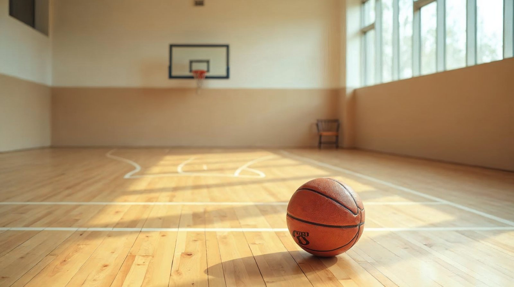
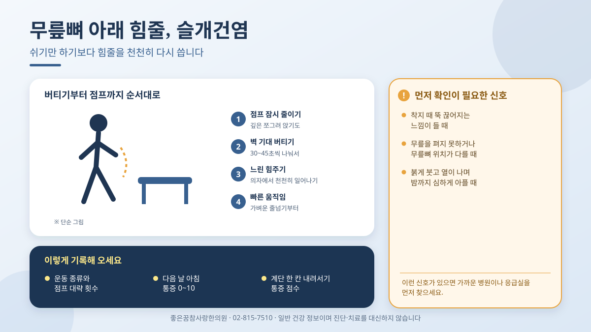

이종호 한의사 감수좋은꿈참사랑한의원 대표원장 (한의사 면허번호 19769)발행 2026-11-26 · 수정 2026-11-26
이 글의 차례
저녁 동호회 배구를 마치고 차에 오르려는데 무릎뼈 바로 아래가 찌릿합니다. 계단을 내려갈 때마다 같은 자리가 콕 집히고, 다음 날 아침 의자에서 일어설 때도 뻐근합니다. 처음에는 운동 끝나고 잠깐 아프다가 사라졌는데, 요즘은 몸을 풀 때부터 신경이 쓰입니다.
진료실에서 이런 이야기를 들으면 저는 먼저 손가락으로 아픈 자리를 짚어 보시라고 부탁드립니다. 무릎뼈 아래 끝에서 엄지손가락 한 마디쯤 내려온 자리, 단단한 힘줄 위를 정확히 가리키신다면 슬개건 쪽 통증을 먼저 생각합니다.
흔히 슬개건염, 또는 점프를 많이 하는 선수에게 흔하다고 해서 점퍼스 니라고 부릅니다. 요즘에는 염증보다 힘줄이 지쳐 구조가 흐트러진 상태라는 뜻에서 슬개건병증이라는 말도 함께 씁니다. 이름은 여러 가지지만 핵심은 하나입니다. 힘줄이 감당할 수 있는 양보다 많은 일을 오래 했다는 것입니다.
이 글에서는 슬개건이 하는 일, 아픈 이유, 비슷한 무릎 통증과의 차이, 운동을 어떻게 나눠 이어 갈지, 한의원에서는 무엇을 함께 살피는지를 차례로 말씀드리겠습니다.
슬개건은 어떤 일을 하나요
허벅지 앞쪽의 큰 근육은 무릎뼈를 감싸고 내려와 무릎뼈 아래에서 하나의 굵은 힘줄이 됩니다. 이 힘줄이 슬개건이고, 정강이뼈 위쪽 앞에 붙습니다. 허벅지 근육이 힘을 쓰면 이 힘줄을 통해 무릎이 펴집니다.
점프할 때 바닥을 차고 오르는 힘, 착지할 때 무릎이 꺾이지 않도록 버티는 힘이 모두 이 힘줄을 지나갑니다. 특히 착지 순간에는 체중의 몇 배에 이르는 힘이 짧은 시간에 몰립니다. 슬개건은 이 힘을 고무줄처럼 받아 두었다가 다시 돌려주는 역할을 합니다.
힘줄은 근육보다 혈액 공급이 적어서 회복 속도가 느립니다. 근육은 며칠이면 풀리는 피로도 힘줄에는 몇 주씩 남기도 합니다. 그래서 운동량이 늘어난 속도를 힘줄이 따라가지 못하면 통증이 서서히 쌓이게 됩니다.
왜 점프와 달리기 뒤에 무릎뼈 아래가 아플까요
가장 흔한 계기는 갑자기 늘어난 운동량입니다. 동호회 시즌이 시작되거나, 대회를 앞두고 연습을 늘렸거나, 쉬다가 다시 운동을 시작한 무렵에 통증이 드러나는 경우가 많습니다. 점프 횟수와 착지 횟수가 몇 주 사이에 크게 늘었다면 힘줄이 따라가기 어렵습니다.
바닥도 영향을 줍니다. 딱딱한 실내 코트, 아스팔트, 계단 오르기 훈련은 착지 충격을 더 크게 만듭니다. 쪼그려 앉았다 일어나기를 무거운 무게로 반복하는 운동도 같은 힘줄에 부담을 줍니다.
몸의 조건도 함께 봅니다. 허벅지 앞과 뒤가 많이 굳어 있거나, 종아리와 발목이 뻣뻣해 착지 충격을 아래에서 덜 흡수하거나, 엉덩이 근육이 약해 무릎이 안쪽으로 모이는 착지를 하는 분은 슬개건에 힘이 더 몰릴 수 있습니다.
잠이 부족하고 일이 바쁜 시기에 운동을 몰아서 하는 생활도 한몫합니다. 힘줄이 회복할 시간을 갖지 못한 채 다음 운동을 맞이하기 때문입니다. 주말에만 몰아서 길게 운동하는 분도 같은 이유로 힘줄이 쉽게 지칩니다.
비슷해 보이는 다른 무릎 통증과는 무엇이 다른가요
무릎 앞쪽 통증은 아픈 자리를 손가락 하나로 짚어 보는 것만으로도 방향이 많이 갈립니다.
- 무릎뼈 아래 끝 바로 밑, 힘줄 위를 누르면 아프다: 슬개건 쪽을 먼저 생각합니다
- 무릎뼈 주변 전체가 시큰하고 오래 앉았다 일어날 때 아프다: 슬개대퇴통증을 함께 봅니다
- 무릎 아래 정강이뼈 앞이 볼록하게 솟고 성장기다: 오스굿병을 함께 생각합니다
- 무릎 바깥쪽이 달릴 때 찌릿하다: 장경인대 쪽 통증을 함께 봅니다
- 무릎 안쪽 아래가 콕 집힌다: 거위발 쪽 통증을 함께 봅니다
슬개건 통증은 운동을 시작할 때 아팠다가 몸이 풀리면 덜해지고, 운동이 끝나고 식으면 다시 아파지는 흐름을 보이는 경우가 많습니다. 이 흐름 때문에 "하다 보면 괜찮아진다"며 계속 운동을 이어 가다가 통증이 길어지는 분이 많습니다.
집에서 해 볼 수 있는 간단한 확인
진료실에 오시기 전 몇 가지를 살펴 두시면 상태를 가늠하는 데 도움이 됩니다. 통증이 크게 올라오면 바로 멈추세요.
- 무릎을 편 채 앉아 무릎뼈 아래 힘줄을 눌렀을 때 아픈 정도
- 계단 한 칸에서 아픈 다리로 천천히 내려설 때의 통증
- 한 발로 서서 무릎을 살짝 굽혔다 펼 때 양쪽 차이
- 엎드려 발뒤꿈치를 엉덩이 쪽으로 당길 때 양쪽 거리 차이
이 가운데 계단 한 칸 내려서기를 0~10으로 매겨 일주일에 한 번 적어 두시면, 힘줄 상태가 어떻게 흘러가는지 알려 주는 간단한 잣대가 됩니다. 같은 계단, 같은 신발로 재는 것이 좋습니다.
운동하지 않는 날에도 무릎을 아끼는 법
슬개건은 운동할 때만 쓰이는 것이 아닙니다. 출퇴근길 계단, 낮은 의자에서 일어나기, 바닥에 쪼그려 앉아 하는 집안일도 같은 힘줄을 씁니다. 통증이 있는 동안은 일상의 작은 부담도 조금씩 덜어 주는 것이 좋습니다.
계단은 난간을 잡고 내려가고, 가능하면 엘리베이터와 섞어 씁니다. 너무 낮은 의자나 소파보다 무릎이 엉덩이보다 조금 낮게 오는 높이의 의자가 일어서기 편합니다. 바닥 청소나 빨래 개기는 쪼그려 앉기보다 낮은 의자에 앉아서 하시길 권합니다.
오래 앉아 있으면 무릎 앞이 뻣뻣해져 일어날 때 아픈 분이 많습니다. 한 시간에 한 번쯤 일어나 무릎을 가볍게 굽혔다 펴 주세요.
쉬기만 하면 좋아지나요
통증이 심할 때 잠시 쉬면 아픈 느낌은 가라앉습니다. 그런데 완전히 쉬기만 하면 힘줄과 허벅지 근육이 함께 약해져서, 다시 운동을 시작했을 때 통증이 쉽게 되살아납니다. 힘줄은 적당한 부담을 받으며 다시 튼튼해지는 조직이기 때문입니다.
그래서 슬개건 통증은 쉬는 것과 쓰는 것 사이의 균형을 찾는 과정이라고 말씀드립니다. 아픈 동작, 즉 점프와 깊은 쪼그려 앉기는 잠시 줄이고, 통증이 크지 않은 범위에서 힘줄에 천천히 힘을 주는 운동은 이어 가는 방향입니다.
기준은 다음 날 아침입니다. 운동 중 통증이 10점 가운데 3~4점 이하이고, 다음 날 아침에 평소 수준으로 돌아온다면 그 양은 힘줄이 견딜 수 있는 양으로 봅니다. 다음 날 더 아프다면 양을 한 단계 줄입니다.

힘줄을 다시 쓰는 순서는 어떻게 되나요
힘줄을 다시 튼튼하게 하는 운동은 대개 버티기에서 시작해 천천히 움직이기, 빠르게 움직이기 순으로 나아갑니다. 각 단계는 몇 주씩 걸릴 수 있으니 조급해하지 않는 것이 중요합니다.
첫 단계는 벽에 등을 기대고 무릎을 살짝 굽힌 채 30~45초 버티기처럼 움직이지 않고 힘을 주는 운동입니다. 통증이 줄어드는 느낌을 받는 분이 많습니다. 다음은 의자에서 천천히 일어났다 앉기, 계단 한 칸 천천히 오르내리기처럼 느린 속도로 힘을 주는 운동입니다.
이 단계가 편안해지면 가벼운 줄넘기나 제자리 뛰기처럼 빠른 움직임을 조금씩 더하고, 마지막에 원래 하던 운동의 점프와 방향 전환으로 돌아갑니다. 어느 단계에서든 다음 날 아침 통증이 올라오면 한 단계 전으로 돌아가면 됩니다.
통증이 오래 이어질 때 마음가짐
힘줄 통증은 몇 주에서 몇 달에 걸쳐 오르내리며 천천히 자리를 잡는 경우가 많습니다. 하루 이틀 좋아졌다고 바로 원래 운동으로 돌아가면 다시 아파지고, 그러면 '역시 안 되는구나' 하며 실망하시기 쉽습니다.
그래서 저는 하루하루의 통증보다 2주 단위의 흐름을 보자고 말씀드립니다. 2주 전보다 계단 내려가기 점수가 조금 낮아졌다면 방향은 맞게 가고 있는 것입니다. 중간에 한 번 올라가는 날이 있어도 흐름 전체를 보면 됩니다.
운동을 쉬는 동안 체력이 떨어질까 걱정되신다면 상체 운동, 수영, 무릎 부담이 적은 자전거처럼 다른 운동으로 몸을 움직여 주세요. 몸 전체가 움직이고 있다는 느낌이 조급한 마음을 덜어 줍니다.
먼저 이렇게 여쭙니다
처음 오시면 대략 이런 순서로 여쭙니다. 미리 생각해 오시면 이야기가 훨씬 수월해집니다.
- 어떤 운동을 일주일에 몇 번, 한 번에 얼마나 하시나요?
- 통증이 시작된 무렵 운동량이나 바닥, 신발이 바뀌었나요?
- 운동 시작할 때, 한창 할 때, 끝나고 식은 뒤 가운데 언제 가장 아픈가요?
- 계단을 내려갈 때, 오래 앉았다 일어날 때, 쪼그려 앉을 때는 어떤가요?
- 예전에 같은 자리가 아팠던 적이 있나요?
- 진통제나 소염제를 드시고 계신가요?
진통제를 드시고 운동을 이어 가시는 분도 있습니다. 통증이 가려진 상태로 운동량을 유지하면 힘줄 부담을 가늠하기 어려워지니, 드시는 약은 처음에 꼭 알려 주세요. 처방받은 약은 처방한 선생님과 상의 없이 끊지 않습니다.
일상에서 먼저 해 볼 수 있는 것
일상에서는 힘줄에 몰리는 부담을 줄이고, 회복할 시간을 넉넉히 주는 것부터 시작합니다.
- 점프와 깊은 쪼그려 앉기 횟수를 잠시 줄이기
- 벽에 기대 무릎 살짝 굽히고 버티기를 하루 몇 번 나눠 하기
- 허벅지 앞·뒤, 종아리를 운동 전후 20~30초씩 천천히 늘리기
- 연달아 운동하는 날 사이에 하루 쉬는 날 넣기
- 딱딱한 바닥보다 쿠션 있는 바닥과 신발 고르기
- 운동 뒤 열감이 있으면 얇은 수건으로 감싼 차가운 찜질 10분 남짓
착지 모양도 한 번 살펴보세요. 거울 앞에서 낮은 높이로 가볍게 뛰어 착지해 보았을 때 무릎이 안쪽으로 모인다면, 엉덩이 옆 근육을 깨우는 운동을 함께 하는 것이 도움이 될 수 있습니다. 옆으로 누워 위쪽 다리를 천천히 들어 올렸다 내리는 동작부터 시작해 보세요.
한의원에서 함께 살필 수 있는 경우
- 운동 뒤 무릎뼈 아래 통증이 며칠씩 이어지는 경우
- 허벅지와 종아리가 굳어 스트레칭이 잘 되지 않는 경우
- 통증 때문에 계단이나 쪼그려 앉기를 피하게 된 경우
- 잠과 피로 때문에 회복이 더디다고 느끼는 경우
- 운동을 다시 늘릴 때 순서와 양을 함께 정하고 싶은 경우
좋은꿈참사랑한의원에 오시면 먼저 아래 '먼저 확인이 필요한' 신호가 없는지부터 봅니다. 그다음 무릎 주변과 허벅지, 종아리를 직접 만져 보며 아픈 자리와 굳은 자리를 확인하고, 한 발 서기와 착지 모양을 함께 봅니다.
진찰한 내용을 바탕으로 침이나 약침, 온열 관리, 필요하다고 판단되면 체외충격파 상담, 집에서 할 운동 가운데 지금 상태에 맞는 것을 정합니다. 한약은 잠과 피로가 함께 문제일 때 드시는 약을 확인한 뒤 신중히 상의합니다.
힘줄이 크게 손상된 것이 의심되면 정형외과에서 정밀 검사를 받으시도록 안내합니다. 한의원 진료는 운동을 이어 가는 동안 힘줄과 주변 근육의 회복을 곁에서 돕는 역할이라고 생각해 주시면 됩니다.
이렇게 기록해 오시면 상담이 쉬워집니다
힘줄 통증은 오늘 운동보다 다음 날 아침이 더 많은 것을 알려 줍니다. 2주 정도 간단히 적어 보세요.
- 운동한 날, 운동 종류, 점프나 쪼그려 앉기 대략 횟수
- 운동 중 통증과 다음 날 아침 통증을 0~10으로
- 계단 내려갈 때 아팠던 날
- 버티기 운동과 스트레칭을 한 날
- 잠든 시각과 일어난 시각
기록을 나란히 놓고 보면 힘줄이 견디는 양이 어디까지인지가 보이기 시작합니다. 그 선 바로 아래에서 운동을 이어 가다가 조금씩 선을 올리는 것이 다음 걸음입니다.
오래 운동하기 위한 힘줄 돌보기
슬개건 통증은 운동을 좋아하는 분에게 찾아오는 경우가 많습니다. 운동을 그만두라는 신호라기보다, 늘린 속도를 조금 늦추고 힘줄이 따라올 시간을 달라는 신호로 받아들이시면 좋겠습니다.
이번 주에는 점프 횟수 줄이기와 벽 기대 버티기, 이 두 가지만 정해 보세요. 다음에 오시면 2주 기록을 함께 펼쳐 놓고 다음 단계를 정하겠습니다.
이런 증상은 먼저 확인이 필요합니다
- 착지 순간 무릎 앞에서 뚝 끊어지는 느낌과 함께 무릎을 펴지 못하거나 무릎뼈 위치가 달라 보이는 경우
- 무릎이 붉게 붓고 뜨거우며 열이 나거나 쉬어도 밤까지 계속 심하게 아픈 경우
이런 신호가 있으면 한의원보다 가까운 병원이나 응급실을 먼저 찾으세요.
함께 읽으면 좋은 글
- 무릎뼈 아래가 아파 점프나 쪼그려 앉기가 불편할 때는 어떻게 살피나요?
- 무릎 앞쪽, 무릎뼈 주변이 시큰한 슬개대퇴통증은 어떻게 살피나요?
- 달리다 보면 무릎 바깥쪽이 찌릿한 장경인대 증후군은 왜 생기고 어떻게 살피나요?
- 무릎 안쪽 아래가 아픈 거위발건염은 무릎 관절염과 어떻게 다르고 어떻게 살피나요?
- 운동을 꾸준히 하는 분은 진료 전에 무엇을 알려야 하나요?

여쭙는 것
- 어떤 운동을 일주일에 몇 번, 한 번에 얼마나 하시나요?
- 통증이 시작된 무렵 운동량이나 바닥, 신발이 바뀌었나요?
- 운동 시작할 때, 한창 할 때, 끝나고 식은 뒤 가운데 언제 가장 아픈가요?
생활에서 해 볼 것
- 점프와 깊은 쪼그려 앉기 횟수를 잠시 줄이기
- 벽에 기대 무릎 살짝 굽히고 버티기를 하루 몇 번 나눠 하기
- 허벅지 앞·뒤, 종아리를 운동 전후 20~30초씩 천천히 늘리기
한의원에서 함께 살필 것
- 운동 뒤 무릎뼈 아래 통증이 며칠씩 이어지는 경우
- 허벅지와 종아리가 굳어 스트레칭이 잘 되지 않는 경우
- 통증 때문에 계단이나 쪼그려 앉기를 피하게 된 경우
먼저 확인이 필요한 신호
- 착지 순간 무릎 앞에서 뚝 끊어지는 느낌과 함께 무릎을 펴지 못하거나 무릎뼈 위치가…
- 무릎이 붉게 붓고 뜨거우며 열이 나거나 쉬어도 밤까지 계속 심하게 아픈 경우
한눈에 보는 표
| 구분 | 핵심 |
|---|---|
| 여쭙는 것 | 어떤 운동을 일주일에 몇 번, 한 번에 얼마나 하시나요? 통증이 시작된 무렵 운동량이나 바닥, 신발이 바뀌었나요? |
| 생활에서 해 볼 것 | 점프와 깊은 쪼그려 앉기 횟수를 잠시 줄이기 벽에 기대 무릎 살짝 굽히고 버티기를 하루 몇 번 나눠 하기 |
| 한의원에서 함께 살필 것 | 운동 뒤 무릎뼈 아래 통증이 며칠씩 이어지는 경우 허벅지와 종아리가 굳어 스트레칭이 잘 되지 않는 경우 |
| 먼저 확인이 필요한 신호 | 착지 순간 무릎 앞에서 뚝 끊어지는 느낌과 함께 무릎을 펴지 못하거나 무릎뼈 위치가 달라 보이는 경우 무릎이 붉게 붓고 뜨거우며 열이 나거나 쉬어도 밤까지 계속 심하게 아픈 경우 |
자주 묻는 질문
무릎 보호대나 테이프는 도움이 되나요?
무릎뼈 아래 힘줄을 살짝 눌러 주는 띠나 테이프가 운동 중 불편을 덜어 준다는 분이 있습니다. 다만 보호대만 믿고 운동량을 늘리기보다 다음 날 아침 통증을 기준으로 양을 조절하는 것이 중요합니다.
스쿼트는 아예 하지 말아야 하나요?
깊고 빠른 스쿼트는 잠시 줄이지만, 통증이 크지 않은 범위의 얕고 느린 스쿼트는 힘줄을 다시 튼튼하게 하는 데 쓰이기도 합니다. 진찰 뒤 지금 단계에 맞는 깊이와 횟수를 함께 정합니다.
아플 때 운동 전에 진통제를 먹고 해도 되나요?
통증이 가려지면 힘줄이 견디는 양을 가늠하기 어려워집니다. 처방받은 약은 처방한 선생님과 상의해 드시고, 운동량은 약 없이 느끼는 통증을 기준으로 정하시길 권합니다.
체외충격파는 모든 분께 하나요?
아닙니다. 진찰과 필요하다고 판단될 때의 초음파 소견, 통증이 이어진 기간, 지금 하고 계신 운동을 함께 보고 상의해 정합니다.
얼마나 지나면 다시 점프 운동을 할 수 있나요?
사람마다 힘줄 상태와 운동량이 달라 기간을 미리 정하기는 어렵습니다. 버티기와 느린 운동이 편안해지고 다음 날 아침 통증이 안정되면 점프를 조금씩 더해 가는 순서로 갑니다.
좋은꿈참사랑한의원은 재진 때 지난번 이야기부터 이어서 여쭙니다. 진료시간과 예약은 오시는 길에서 확인하세요.
어디서 상담받을 수 있나요?
좋은꿈참사랑한의원은 서울 동작구 만양로2길 2 신성빌딩 3층·5층(서울 동작구 상도동, 7호선 상도역 3번 출구 근처)에 있습니다. 한의사 3명(이종호 대표원장, 조영기 수석진료원장, 정원영 진료원장)이 진료합니다. 진료시간은 평일 09:30~20:00(점심 13:00~14:00), 토·일·공휴일 09:30~15:00이며, 방문 전 전화로 확인을 권합니다. 예약은 네이버 예약, 카카오톡 상담, 전화 02-815-7510로 받습니다.
이 글은 일반적인 건강 정보이며 개인의 진단이나 치료를 대신하지 않습니다. 증상이 있거나 복용 중인 약이 있다면 진료를 통해 확인하세요. 치료 효과는 개인마다 다를 수 있습니다.
작성 기준: 일반적으로 알려져 있는 건강 정보를 참고해 정리했습니다(대표원장 감수). 증상 기록은 1~2주 동안 하루 1회, 비슷한 시간에 적어 오시면 지난 상태와 비교하기 쉽습니다.